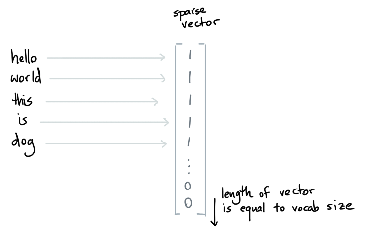

Quickstart
The goal of this tool is to offer you a simple service for similarity detection.
So let's build an example! We'll build a similarity searching tool for a text dataset.
Example Data¶
Let's look at the clinc dataset. This dataset contains texts that represent intents that you might expect from a chatbot.
from simsity.datasets import fetch_clinc
df = fetch_clinc()
Here's what the top 5 rows look like.
| text | label | split |
|---|---|---|
| get a text to mark | 26 | valid |
| how do i let my bank know i'm going to vietnam | 146 | train |
| what location did you live at before | 77 | train |
| i got to remove fishing from my calendar for soccer | 105 | train |
| i need an uber to class tonight on the mainline campus | 39 | train |
We see a bunch of information in this dataset but we're interested
in exploring similarities in the text field.
The Tactic¶
The idea is that we're going to split the problem of similarity search into two subproblems.
- The first problem is encoding. If we're going to use similarities, we'll need some way to turn our data into a numeric representation. Without a numeric representation it'll be quite hard to compare items numerically.
- The second problem is indexing. Even when we have numeric representations to compare against, we don't want to compare all the possible solutions out there. Instead we'd prefer to index out data such that it's fast to retreive.
To solve the first problem, simsity likes to re-use tools from the scikit-learn ecosystem. An encoder in simsity is simply a scikit-learn pipeline that transforms data. To solve the second problem, simsity wraps around existing tools for approximate nearest-neighbor lookup. The goal of simsity is to combine an encoder and an indexer into a service that's convenient for interaction.
Example Encoder¶
We're going to encode text, so a straightforward encoder would be the countvectorizer from scikit-learn. This way, we will index each word in the text in a sparse array. This sparse array will then get indexed by our indexer later.

Here's the code required to run this.
from simsity.preprocessing import ColumnLister
from sklearn.pipeline import make_pipeline
from sklearn.feature_extraction.text import CountVectorizer
encoder = make_pipeline(ColumnLister(column="text"), CountVectorizer())
You may wonder why we're building a pipeline with a ColumnLister class.
The simple story is that the CountVectorizer needs a list of strings as
input. The only thing that the ColumnLister does is that it takes the
dataframe and extracts the "text" column and outputs it as a list. By
wrapping both components in a make_pipeline-call we're still dealing
with a single encoder pipeline that we can pass along.
Example Indexer¶
Simsity provides indexers by wrapping around existing solutions. In particular it supports PyNNDescent out of the box.
from simsity.indexer import PyNNDescentIndexer
indexer = PyNNDescentIndexer(metric="euclidean", n_jobs=6)
There are many distance metrics
that PyNNDescent supports and it's also able to index in parallel by setting the
n_jobs parameter.
Note
We'll be using the PyNNDescentIndexer indexer in this demo because it's very flexible.
It supports dense arrays as well as sparse ones! The only downside is that it does take
a while to index all the data. If you're looking for a faster indexing method you may want
to try the AnnoyIndexer based on annoy. If you're
curious to learn how it works, you may appreciate this segment on calmcode.
Building a Service¶
Once you have an encoder and an indexer, you can construct a service.
from simsity.service import Service
service = Service(
indexer=indexer,
encoder=encoder
)
This service can now train on your dataset. It will start by first training the encoder pipeline. After that the data will be transformed and indexed by the indexer. All of this will be handled by the following call:
service.train_from_dataf(df, features=["text"])
It's good to notice that we're being explicit here about which features
are being used. We're telling our service to only consider the "text" column!
This is important when you want to query your data.
Query the Data¶
You can now try to look for similar items by sending a query to the service.
Note that the keyword argument text= corresponds with the features that
we chose to index earlier.
service.query(text="please set a timer", n_neighbors=10, out="dataframe")
This is the table that you'll get back.
| text | dist |
|---|---|
| please set a 4 minute timer | 1 |
| set a timer | 1 |
| please set a timer for | 1 |
| "please set 5 minute timer | 1 |
| start a timer please | 1.41421 |
| please begin a timer | 1.41421 |
| set a 2 minute timer | 1.41421 |
| set a 4 minute timer | 1.41421 |
| set a 1 minute timer | 1.41421 |
| set a five minute timer please | 1.41421 |
The quality of what you get back depends on the data that you give the system, the encoding and the indexer that you pick. It may very well be that we should add word embeddings via whatlies or that we should consider a different metric when we index our data. It's also very well possible that text that is too long or too short won't compare easily.
The goal of this package is to make it easy to interact and experiment with the idea of "building neigborhoods of similar items". Hence the name: simsity.
Extra Features¶
Training a service may take quite a bit of time, so it may be good to save your service on disk.
service.save("/tmp/simple-model")
You can reload the service by using the .load classmethod.
reloaded = Service.load("/tmp/simple-model")
You could even run it as a webservice if you were so inclined.
reloaded.serve(host='0.0.0.0', port=8080)
You can now POST to http://0.0.0.0:8080/query with payload:
{"query": {"text": "please set a timer"}, "n_neighbors": 5}
This would be the response that you get back.
[{'item': {'text': 'set a timer'}, 'dist': 1.0},
{'item': {'text': 'please set a timer for'}, 'dist': 1.0},
{'item': {'text': '"please set 5 minute timer'}, 'dist': 1.0},
{'item': {'text': 'please set a 4 minute timer'}, 'dist': 1.0},
{'item': {'text': 'start a timer please'}, 'dist': 1.4142135381698608}]
All Code¶
Here's the full code block that we've used in this section.
from simsity.service import Service
from simsity.datasets import fetch_clinc
from simsity.indexer import PyNNDescentIndexer
from simsity.preprocessing import ColumnLister
from sklearn.pipeline import make_pipeline
from sklearn.feature_extraction.text import CountVectorizer
# We first fetch a dataset
df = fetch_clinc()
# The Encoder handles the encoding of the datapoints
encoder = make_pipeline(ColumnLister(column="text"), CountVectorizer())
# The Indexer handles the nearest neighbor search
indexer = PyNNDescentIndexer(metric="euclidean", n_jobs=6)
# The Service combines them together into a service
service = Service(
indexer=indexer,
encoder=encoder
)
# Important for later: we're only passing the 'text' column to encode
service.train_from_dataf(df, features=["text"])
# Query the datapoints
# Note that the keyword argument here refers to 'text'-column
service.query(text="please set a timer", n_neighbors=10, out="dataframe")
# Save the entire system
service.save("/tmp/simple-model")
# You can also load the model now.
reloaded = Service.load("/tmp/simple-model")
reloaded.serve(host='0.0.0.0', port=8080)